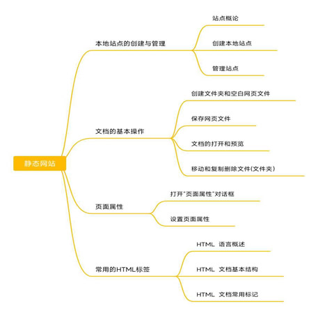

网页制作
项目一 静态站点
考纲要求
1.掌握本地站点创建与管理的基本操作。
2.掌握文档的基本操作
3.掌握页面属性的设置方法
4.了解常用的HTML标签
知识体系

HTML 语言概述
HTML(Hypertext Marked Language,超文本标记语言)是用于创建 Web 文档的一种标记语言。
制作 HTML 文档的方法:
①使用记事本之类的工具,直接输入 HTML 的源代码，然后保存为以.html或.htm 为扩展名的网页文件;。
②使用可视化的网页制作工具,根据用户的操作自动生成HTML代码，如 Dreamweaver、Frontpage 等软件。
HTML 文档基本结构
一个 HTML 文档是由一系列的网页元素和标记组成的,HTML 用标记来规定元素的属性和它在文件中的位置。
HTML文档的结构包括头部分(head)和主体部分(body)两大部分,其中头部分描述浏览器所需的信息,主体部分则包含了所要说明的具体内容。
由结构可以看出:
(1)HTML 文档包括 3 个主要标记,文档标记<html>.....</html>、头部标记<head>......</head>和主体标记<body>·...../body>
(2)标记不区分大小写。
(3)所有的标记都要用尖括号>括起来范:html>标记用于HTML 文档的最前面用来标识 HTML 文档的开始，而/html>标记的相反，它放在 HTML 文档的最后面，用来标识 HTML 文档的结束,这两个标记必须成对使用。
在<head>......</head>内,称为文件头部可以包含<title></title>、meta>等标记这部分信息不会在浏览器的窗口中显示出来在<body>......</body>内,称为正文主体可包含<p></p>、img>、<hr>、<table>等标记,其内容将在浏览器窗口中显示出来。